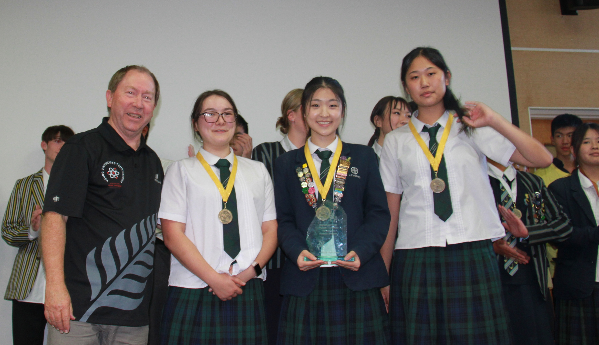
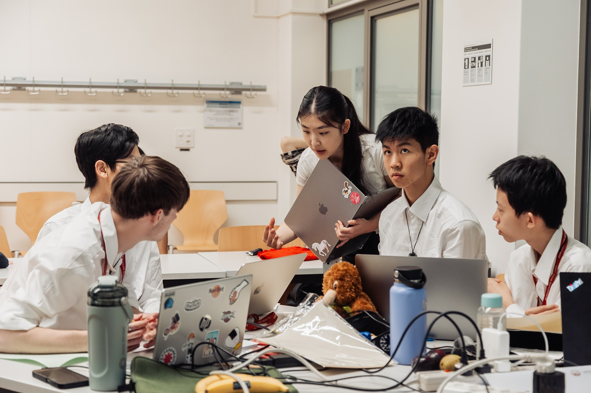
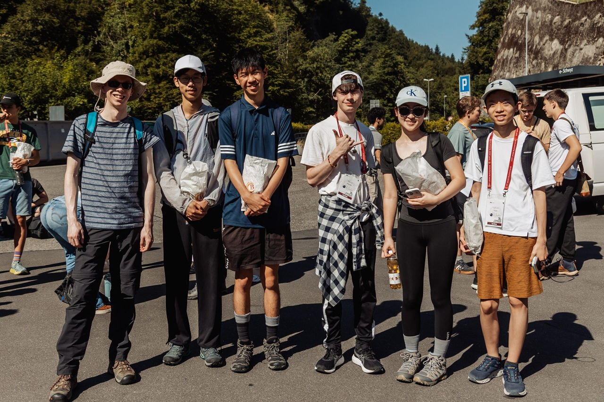

The New Zealand Young Physicists’ Trust, registered charity CC62496, runs the International Young Physicists’ Tournament in New Zealand. This prestigious global competition for high school students is also known as the “World Cup of Physics”. In 2027, it will take place in Auckland, New Zealand.
IYPT has no written exams. Instead, 17 research problems are set internationally in July every year. Students must investigate xperimentally and report on these in a real-world scientific research process. The problems are open-ended, and there is no endpoint or single ‘correct’ answer.
Students are encouraged to work in teams throughout their research and the International Tournament itself is a competition between national representative teams of five students.
Stage one – Research before the tournament. Students spend months investigating the physics phenomena described in the problems through both experiments and the development of a digital, predictive model.
Stage two - Peer Review at the Tournament. The tournament is a week-long festival of physics and competition in ‘physics fights’. The fights are viva voce inspired discussions between three national teams who present and defend their research. There are five rounds of fights before a grand final between the top three teams.
The Trust’s charitable purpose is to enrich high-school physics education to increase the number of students who go on to tertiary STEM studies and careers. We do this by running physics competitions and workshops in New Zealand based on the 17 IYPT problems.
The two main competitions are for places in the New Zealand representative team and a separate national schools’ tournament. See our website iypt.org.nz for full details of both competitions.
The IYPT team selection process runs from mid-July to February. It is open to all students who are New Zealand residents or permanent citizens and who are enrolled in an authorised New Zealand school, including Te Kura. Students enter by submitting a 12 minute video of their best solution by the deadline. The final team of five students is chosen at a residential selection camp.
The schools’ competition takes place at the end of term one. This involves three rounds of physics fights. Schools can enter up to two teams. We also allow combined teams from more than one school and non-school teams from high school project groups such as Women in Engineering.
Most students winning places on the NZ representative team have competed in the schools’ competition the year prior to selection.
New Zealand has competed in IYPT every year the NZ Government travel advice has permitted since 2003. Our teams have won medals in sixteen of eighteen appearances. Five IYPT alumni have gone on to win Te Puiaki Kaipūtaiao Ānamata - The Prime Minister’s Future Scientist Prize after taking part in IYPT, reflecting the all-round ability required to do well in this tournament.
The top three teams at the 2026 NZ Schools’ Tournament were all female students. St. Cuthbert’s College, Auckland, won Gold and bronze; Queen Margaret College, Wellington, won silver.

IYPT 2026 was held in Zurich, Switzerland. Team New Zealand finished 9 th of 35 nations, winning silver medals.


The 2026 New Zealand representative team competing in Zurich(left) and on the full day’s excursion to the Alps. Cerisa Gu (Captain, St. Cuthbert’s College), Frank Deng (Kirstin School), Hamish Stieller (New Plymouth Boys High School), Johan Chan (Kings College) and Max Mei (Auckland Grammar). In the Alps with team leader Benjy Smith, 2022 alumnus and winner of Te Puiaki Kaipūtaiao Ānamata, The Prime Minister’s future scientist prize in 2022.